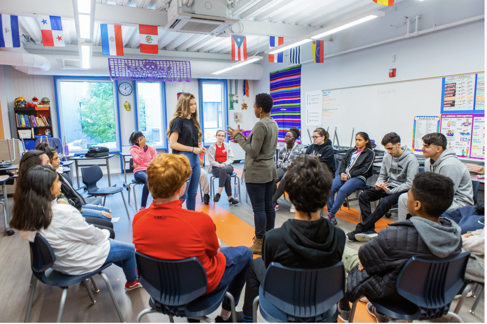
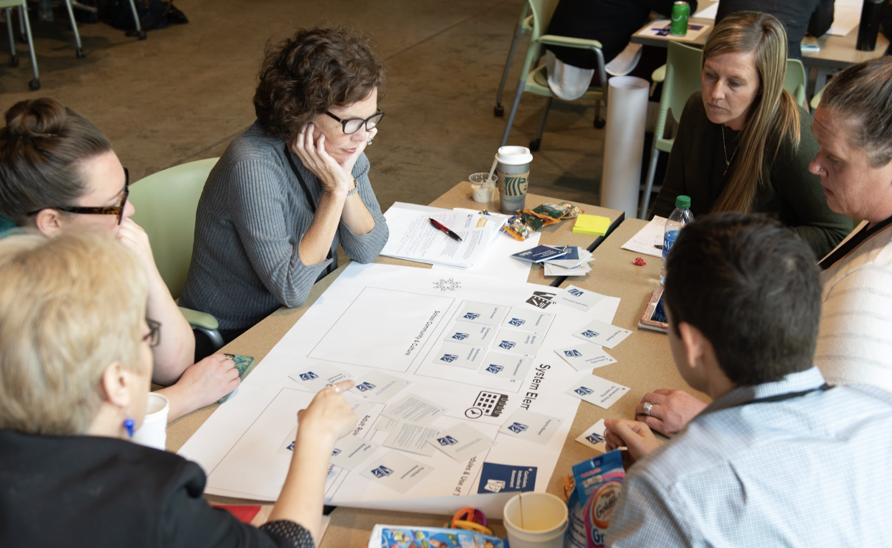

Conviction
A shared belief that meaningful change is both necessary and possible, grounded in an honest picture of what students currently experience and what they deserve.
Design Journeys

Every convening, fellowship, lab, and inspiration visit the Institute offers exists for one reason: to help North Carolina districts pursue meaningful redesign of learning and make it stick.
From Vision to Reality
North Carolina has no shortage of strategic plans, portraits of a graduate, or innovation language. What is harder is the actual work of translating those aspirations into changed learning experiences for real students in real communities.
That work is what we call a design journey. It is an intentional, community-rooted process of redesigning what learning looks like, testing new approaches, learning from what happens, and building toward something more coherent over time.
It is not a pilot that quietly fades. It is not a strategic plan that lives in a drawer. Some design journeys happen at the level of a single school. Others happen across an entire district. Most start smaller than leaders expect and grow further than they imagined.

Why This Work Is Hard
Most districts attempting meaningful change run into the same obstacles: a leadership team that is not fully aligned, a community that has not been genuinely involved, a board that was not brought along early enough, or a staff culture that has learned to wait out the next initiative.
None of that is a failure of leadership. It is a reflection of how hard sustained redesign genuinely is and how little of the existing infrastructure for district leadership was built to support it.
The Institute exists to change that.
Five Conditions
A shared belief that meaningful change is both necessary and possible, grounded in an honest picture of what students currently experience and what they deserve.
A community-informed vision of what better learning looks like, specific enough to drive real decisions about time, money, and structure.
The knowledge, skills, and tools to design, test, and improve new approaches, not just talk about them.
An environment where honest feedback is welcomed, iteration is expected, and adults model the learning orientation they want to develop in students.
Enough support among staff, families, board members, and community partners to sustain the work through inevitable moments of resistance and doubt.
What Design Journeys Can Look Like
Reimagining the high school experience around students' futures rather than Carnegie units and bell schedules.
Building genuine pathways with employers, community organizations, and higher education.
Integrating social-emotional and academic development rather than treating them as separate.
Creating progressions where students advance on demonstrated mastery rather than seat time.
Embedding real voice, choice, and ownership into the daily experience of learning.
North Carolina's strategic plan points toward many of these same destinations. Design journeys are how statewide priorities become real at the school and district level.
Community Is Not Optional
Change that happens to communities, even well-designed and well-resourced change, tends to produce compliance rather than commitment. When the leader who championed it leaves, the design often leaves with them.
Community-based design changes that equation. It brings together students, educators, caregivers, and community partners to shape what learning looks like, building the ownership and staying power that make change durable.
Not design by committee. Not endless process. But a genuine role for the people closest to students in shaping what their schools become. This commitment runs through everything the Institute teaches.
Where Do You Start?
Start with a convening or a foundational lab. Build shared language, assess your conditions, and get clearer on where you want to go.
A fellowship builds the personal leadership capacity sustained redesign requires. Study tours expand your sense of what is possible. Targeted labs build the specific skills your team needs right now.
The Network connects you to peers navigating similar challenges. The Curated Marketplace connects you to specialized support in coaching, design, communications, finance, and more.
One More Thing Saying
Not because progress is slow, but because the change that actually sticks, that survives leadership transitions, political pressure, and moments of doubt, has to be built with real community investment and honest attention to evidence.
The districts that have done this most successfully did not do it overnight. They started with a clear conviction, built strong conditions, and kept going when it was hard.
That is what design journeys require. That is the kind of leadership the Institute is built to develop.
Keep Exploring